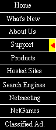

|

© Swiftcom 1999
|
|

|
|

As a leading provider of Internet connectivity
to businesses and organizations, Nasionet recognizes and understands the
Internet-driven challenges many companies face today. To further your company's
business objectives, we can quickly deploy a complete Internet solution,
operations and support, offer custom hosting services, and
maintain reliable, fast Internet access. We can integrate legacy systems
with new Internet applications, thereby protecting your current investment
in equipment and technologies. And we can help you keep your company's
information assets private by minimizing Internet-related security risks.
Back to top
|
|

E-mail Programs
The service that lets users exchange messages across a network; the major e-mail
technology in use on the Internet is based on SMTP (Simple Mail Transfer Protocol).
|
| *Follow this link to the free stuff in the internet !* |
|
|
|
|
FTP
The objective of FTP is to promote sharing of
files (computer programs and/or data),FTP also encourages indirect or implicit
(via programs) use of remote computers, to shield a user from variations
in file storage systems among hosts, and to transfer data reliably and
efficiently. FTP, though usable directly by a user at a terminal, is designed
mainly for use by programs.
Freeware, Software and demo
The most common software and freeware :
Browser
An Internet application that lets users access WWW servers and surf the Net
Chat
An internet application that allows you to make interactive, and real-time chat using the World Wide Web.
Real-audio
Software that delivers real time audio over the Internet
Back to top
|
|
|
|
|

Welcome aboard nasionet. For smooth surfing and e-mail corresponding, we have
provided you a comprehensive support manual, from setting up your nasionet account right
down to locating your favourite sites on the world wide web.
Note: Any place on your screen that is underlined is a hyper-text link to another
screen with related information to the high-lighted text. Often times pictures can be
a link to other sites also. You can tell a picture is a link when your mouse pointer
turns from an arrow to a hand.
1. Connecting to nasionet
2. How to surf the internet and utilise the search engine
3. E-mail configuration / using
4. Modems - configuration / setting
5. User information ( username, user password, change of username/password)
6. Others Application / Features ( NetMeeting, IRC, Games Server, News Group )
7. Reinstallation of nasionet kit
8. Frequently Asked Questions
If you require any further help please feel free to give us a call :-
Telephone number :03-704 4469, 7047008
Hot Line Support Hour :
Mon - Fri = 9:00 a.m. - 7:00 p.m.
Sat = 9:00 a.m. - 1:00 p.m.
Before you call, it would be helpful if you could gather the following details:-
1. Your user name, serial number, pin number, IC/Passport number
2. The model, make and speed of your modem
3. A description of the problem and the error message
4. Version of windows you are using
If you ever find yourself lost ( which is quite easy to do )
all you have to do to get back to the nasionet Home Page is click on the
"HOME", button at the top of your screen.
Back to top
|
|
More information regarding our products and services
please email to us at request@nasionet.net
© 1999 Swiftcom Sdn. Bhd.
|
|